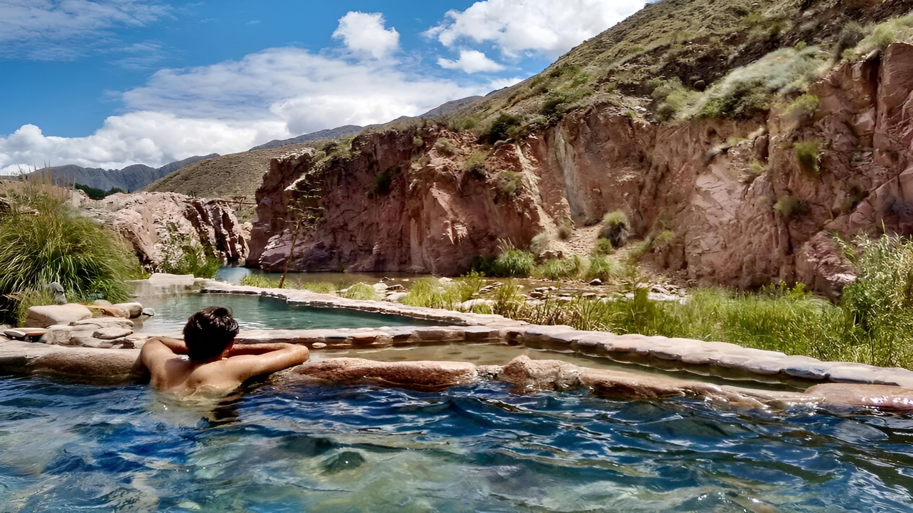

Termas de Cacheuta: relax entre montañas
Ubicadas a pocos kilómetros de Mendoza, las Termas de Cacheuta son el lugar perfecto para relajarse en aguas termales rodeadas de montañas y paisajes increíbles. Es un destino ideal para desconectarse del estrés cotidiano y disfrutar de la naturaleza.
El complejo ofrece piscinas termales, spa, saunas y tratamientos de bienestar. También se pueden realizar actividades como caminatas por los senderos cercanos y paseos en teleférico que permiten disfrutar de vistas panorámicas de la región.
La mejor época para visitar es todo el año, ya que las aguas termales se disfrutan tanto en invierno como en verano. En invierno, la experiencia de sumergirse en agua caliente rodeado de nieve es simplemente inolvidable.
Termas de Cacheuta combina relax, naturaleza y bienestar, convirtiéndose en un destino ideal para parejas, familias o quienes buscan un momento de tranquilidad. Una vez que lo visitás, seguro querrás volver.
← Volver a Categorías